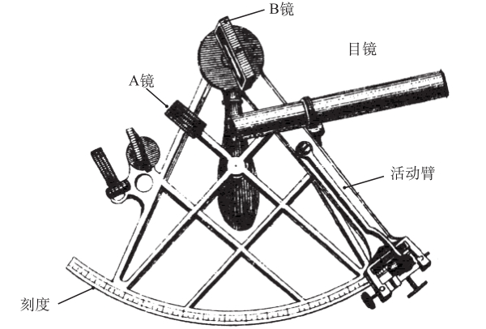

39 六分仪
数学概念：几何学
当你驾着船在广阔的海面上航行，怎样确定你的方位呢？为了增加任务的难度，我们不考虑使用GPS或其他电子设备（包括谷歌地图）。这项任务听起来似乎不可能完成，但是几百年来，水手们能够解决他们的定位问题，所以我们知道，这是可能的。那么，这背后有什么秘密？
秘密在于角度和几何。我们先来看看这种导航有什么可能性。如果你见过地球仪的话，一定看到上面有些纵横交错的线：有的是水平的，平行地分布在赤道（地球仪最中间的水平线）上下，这些是纬线；有的是垂直的，南北纵横，穿过北极和南极，这些是经线。获知你的经度需要用一块表，但是我们感兴趣的是如何知道自己的纬度，导航和数学之间的联系恰恰就在这里。
关键是要明白，一年中任何一天正午时分的太阳方位取决于你所在的纬度，离赤道越近，正午时分的太阳与地面所形成的角度就越接近90°；离赤道越远，这个角度就越小。换句话说，当你向南北方向走，天空中的太阳会显得越来越低。这一原理也可以反过来用，如果能计算出正午时分的太阳与地面所形成的角度，就可以推算出你所在的纬度。

计算这些角度就要用到六分仪———看上去像一块金属饼的手持测量仪器，上面还有一些小附件，其中一个是望远镜。使用六分仪时，可以通过望远镜看到一些天体，比如月亮、星星或者太阳（当然，要通过滤光片）。天体的像会出现在两个镜面里，然后调节活动臂———六分仪边缘的一块金属，直到其中一个镜面中的像接触到水平线。这时，可以看到一个角度出现在六分仪上，活动臂正指着这个角度。这个角度就可以用来计算你所在的纬度。
假设2015年6月21日，你在印度洋靠近印度尼西亚的澳大利亚领土圣诞岛附近的一艘船上。利用六分仪，你可以知道太阳与地面的夹角是66．6°，根据这个角度，可以算出你所在的纬度是南纬10．48°。
事实上，在这个过程中，你利用了三角学———研究三角形的性质（包括角）的数学分支。
如果你认为几何学和你的日常生活没有关系，不妨好好思考一下，尤其是当你的船迷失了方向，却又没有电子设备的时候。
约翰·坎贝尔
第一个真正的六分仪是由约翰·坎贝尔在1757年发明的，并在1768年由探险家库克船长出发去新西兰时被首次完全使用。它也被用作指示时间的仪器。